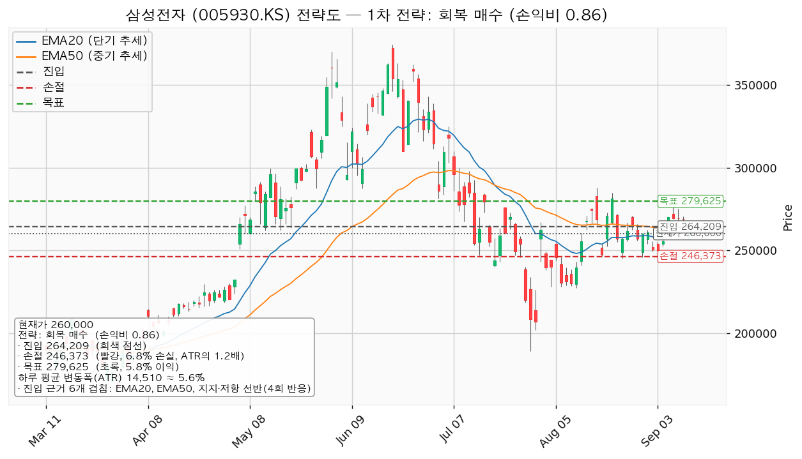
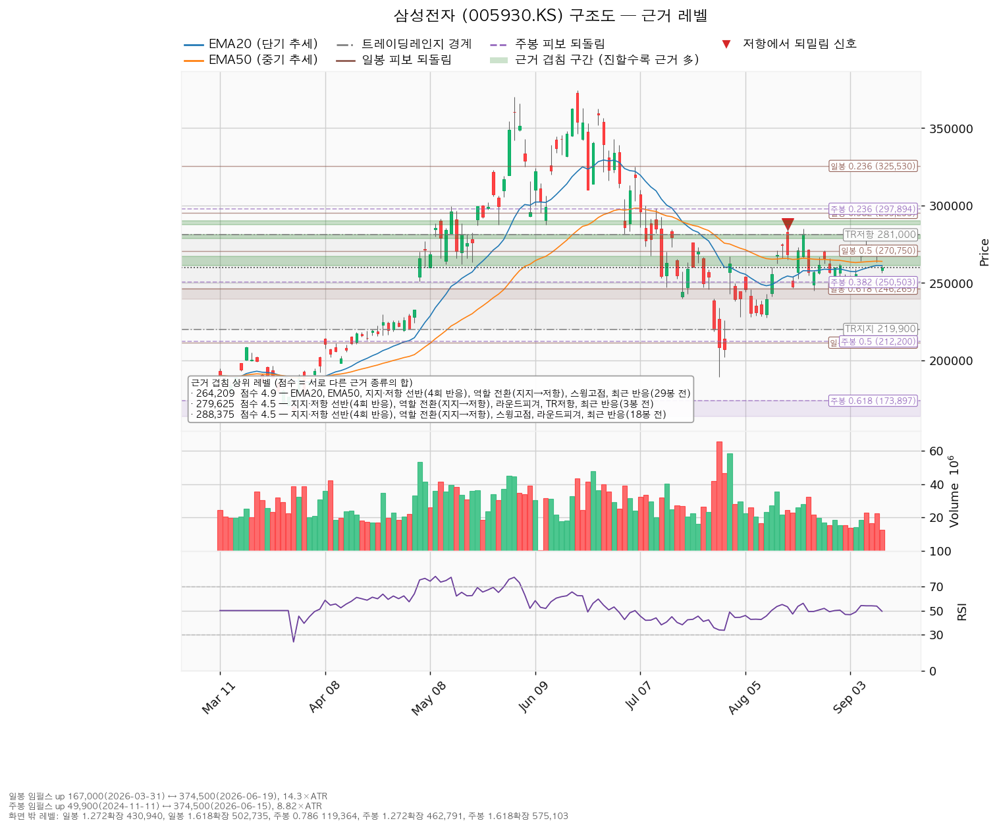
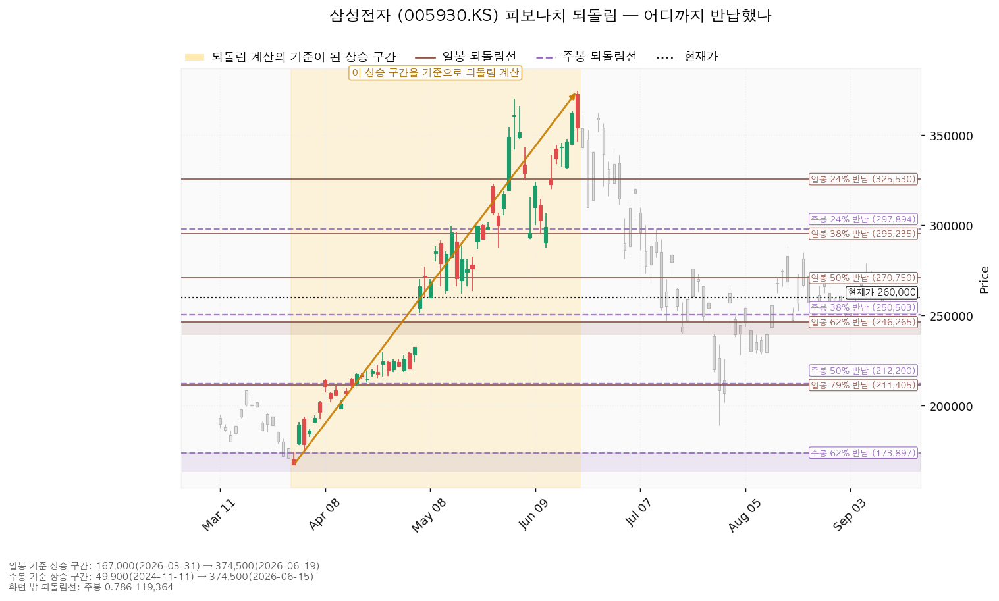
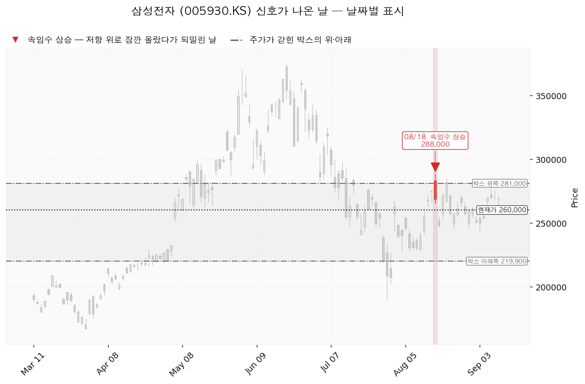

삼성전자(005930.KS)는 D램·낸드 등 메모리 반도체와 파운드리, 스마트폰·가전·디스플레이를 만드는 한국 기업이며, 매출의 큰 부분이 메모리 반도체 업황에 연동됩니다.
| 구분 | 가격 | 판정 방식 | 현재가 대비 | 상태 |
|---|---|---|---|---|
| 회복선(진입 조건) | 264,209원 | 일봉 종가로 회복한 뒤 되돌림에서 지지되는지 | +1.62% (0.29 ATR) | 09-07~09-10 회복했다가 09-11 종가로 다시 아래 |
| 집행 손절 | 246,373원 | 도달 시 즉시 청산 — 진입한 경우에만 유효하며, 미진입 상태에서는 의미가 없습니다 | -5.24% (0.94 ATR) | — |
| 관망 종료 기준 | 240,000원 | 일봉 종가가 아래로 마감 / 또는 2026-10-28 실적 | -7.69% (1.38 ATR) | 유지 중 |
| 확인선 | 279,625원 | 일봉 종가 돌파 후 되돌림에서 지지 확인 | +7.55% (1.35 ATR) | 미돌파 (09-08 고가 279,000원에서 되밀림) |
| 폐기선(구조) | 219,900원 | 이탈 후 3거래일 내 회복 실패 + 반등에서 저항으로 확인 | -15.42% (2.76 ATR) | 유지 중 |
표의 ATR은 하루 평균 변동폭(이번 조회 기준 14,510원)을 뜻하며, 거리를 하루치 움직임의 몇 배로 환산한 값입니다.
폐기선은 현재가에서 하루 평균 변동폭의 2.76배 아래에 있어 실무상 쓸 수 있는 거리입니다(3배를 넘지 않습니다). 미진입 상태에서 실제로 보실 선은 관망 종료 기준 240,000원입니다.
확인선 279,625원은 대표 셋업의 목표와 같은 가격입니다. 분기점으로 쓰십시오 — 여기서 막히고 되밀리면 그것이 목표였으니 전량 청산이고, 일봉 종가로 넘어서면 상승이 확정된 것이므로 그때는 새 셋업으로 다시 잡습니다. 박스 상단 281,000원은 그 위의 맥락일 뿐입니다.
① 당시 트리거는 충족됐습니다. 직전 리포트는 "일봉 종가가 263,800원 위에서 마감하면 롱 전환"을 걸었고, 발행 당일인 2026-09-07 종가 270,000원으로 그 조건이 충족됐습니다. 이후 09-08 종가 269,500원(장중 고가 279,000원), 09-09 269,500원, 09-10 269,000원으로 나흘간 회복선 위에서 마감했고, 09-11 종가 260,000원으로 다시 아래로 내려왔습니다. 진입했다면 목표 285,875원과 손절 245,890원 중 어느 쪽에도 닿지 않았습니다 — 최고가는 279,000원이었고 최저가는 256,500원이었습니다. 진입가 263,800원 기준으로 현재 260,000원은 -1.44%이며, 직전 셋업의 무효화 판정으로는 오늘 1단계(관찰)에 들어섰습니다.
② 장부에 체결 기록이 없습니다 — 계획과 집행이 벌어진 자리입니다. 진입 조건이 충족된 뒤 삼성전자 매수 보고가 장부에 들어오지 않았습니다. 기록이 없다는 것이 "보유하지 않았다"는 답은 아니므로 평단과 보유 수량을 지어 적지 않습니다. 실제로 매수하셨다면 체결 내역(수량·단가·날짜)을 봇에 알려 주십시오. 보유 중이라면 목표는 아래 279,625원으로 내려 잡히고 손절은 246,373원으로 올라가며, 오늘 종가가 회복선 아래로 마감했으므로 신규 추가는 중단하고 손절만 유지하는 단계입니다.
③ 좌표가 움직였고, 이유는 박스 재판정입니다.
| 항목 | 직전(09-07) | 이번(09-11) | 왜 |
|---|---|---|---|
| 박스 | 218,900~348,000원 (90거래일 창) | 219,900~281,000원 (40거래일 창) | 40거래일 창의 가격 유지 비율이 92.5%로 90거래일 창(90%)보다 높아져, 엔진이 더 좁고 최근인 창을 골랐습니다 |
| 회복선 | 263,800원 (겹침 5.5점) | 264,209원 (겹침 4.9점) | EMA20이 261,145원까지 올라와 구간에 합류했고, 260,000원 라운드피겨는 구간 밖으로 빠졌습니다 |
| 확인선·목표 | 285,875원 | 279,625원 | 09-08 장중 279,000원에서 되밀린 반응이 278,750~281,000원 구간에 가산됐고, 박스 상단이 281,000원으로 내려오며 이 구간이 위쪽 첫 저항이 됐습니다 |
| 집행 손절 | 245,890원 | 246,373원 | 손절을 밀어낸 기준 구간이 250,000~257,231원에서 250,000~250,503원으로 좁아졌습니다 |
| 폐기선 | 218,900원 | 219,900원 | 박스 하단이 바뀐 만큼만 움직였습니다 |
| 하루 평균 변동폭 | 16,439원 (주가의 6.43%) | 14,510원 (주가의 5.58%) | 변동성이 줄었습니다 |
| 손익비 | 1:1.23 | 1:0.86 | 손절 폭은 17,910원에서 17,837원으로 거의 그대로인데 목표까지의 폭이 22,075원에서 15,416원으로 줄었습니다 |
④ 판단이 바뀌었습니다. 직전 결론은 "263,800원 종가 회복 시 롱 전환"이었고 이번 결론은 패스입니다. 회복선은 409원 올라갔을 뿐인데 목표가 6,250원 내려왔고, 그 결과 손익비가 1 위에서 1 아래로 떨어졌습니다. 09-08에 279,000원에서 되밀린 움직임이 278,750~281,000원 구간의 저항 근거로 더해지면서 목표가 그 아래로 내려앉았습니다. 같은 구조에서 위쪽 공간만 줄어든 것이므로, 이번에는 회복선을 종가로 되찾더라도 진입하지 않습니다.
⑤ 직전 리포트의 현금흐름 수치를 정정합니다. 직전 리포트는 영업활동 현금흐름 약 196.7조원, 잉여현금흐름 약 69.6조원으로 적었습니다. 이번 조회값은 영업활동 현금흐름 85.3조원, 잉여현금흐름 33.2조원(2025-12-31 결산 기준)이며, 설비투자 52.2조원을 빼면 그대로 맞아떨어집니다. 직전 수치가 잘못됐습니다. 흑자라는 판정 자체는 바뀌지 않습니다.
⑥ 직전에 등록한 "1차 목표(분할안 참고)" 270,375원은 이번에 등록하지 않습니다. 직전 리포트는 분할 청산을 하지 않는다고 적어 놓고 그 분할안의 1차 목표를 감시 가격으로 등록해 두었고, 그래서 09-08에 실행 계획에 없는 청산 알림이 나갔습니다. 이번에는 계획이 실제로 조치를 지시하는 가격만 등록합니다.
| 항목 | 값 |
|---|---|
| 현재가 | 260,000원 (2026-09-11 종가) |
| EMA20 / EMA50(20일·50일 지수이동평균) | 261,145원 / 263,901원 — 둘 다 현재가 위 |
| RSI(14) (14일 상대강도, 50이 중립) | 49.4 — 중립 |
| ATR(하루 평균 변동폭) | 14,510원 (주가의 5.58%) |
| 국면 | 횡보 박스 — 추세는 아래를 향하나 박스 구조는 유지 중(하단 사수가 조건) |
| 횡보 박스 | 219,900 ~ 281,000원 (최근 40거래일 기준, 가격이 이 안에 머문 비율 92.5%, 박스 폭은 하루 변동폭의 4.21배) |
박스는 40·90·180거래일 세 창을 모두 시험해 40거래일 창이 선택됐습니다(조회한 전체 일봉은 729개). 90거래일 창은 가격 유지 비율 90%에 아래로 흐르는 정도 0.351, 180거래일 창은 85%에 0.559인 반면, 40거래일 창은 92.5%에 0.29로 지금의 움직임을 가장 잘 설명합니다. 직전 리포트가 90거래일 창을 썼던 자리를 40거래일 창이 대신했고, 그래서 아래 내용 중 직전 구간과 신호 목록이 함께 바뀌었습니다.
이 박스로는 위에서 내려왔습니다. 직전 구간은 285,500~372,250원 박스였고 아래로 이탈해 지금 박스로 들어왔습니다. 위에서 내려온 박스는 다시 오르기 위한 매물 소화일 수도, 하락이 이어지기 전의 일시적인 멈춤일 수도 있어 박스 모양만으로는 갈리지 않습니다. 판단 근거는 박스 안쪽의 거래량과 저점 흐름입니다.
박스 안쪽 관측치 — 매집 우위입니다.
| 지지 테스트 | 저가 | 그날 거래량(평소 대비) |
|---|---|---|
| 2026-07-29 | 189,200원 | 2.19배 |
| 2026-08-04 | 228,000원 | 0.89배 |
| 2026-08-11 | 227,500원 | 0.78배 |
지지 테스트를 반복할수록 그날 거래량이 줄었고(2.19배 → 0.89배 → 0.78배), 저점은 189,200 → 227,500 → 245,000 → 243,000원으로 절상됐습니다. 팔려는 물량이 아래에서 소진되고 있다는 뜻입니다. 다만 상승봉과 하락봉의 거래량비는 0.90으로, 직전 리포트의 1.06에서 내려와 이제는 하락봉 쪽 거래량이 조금 더 많습니다. 매집 우위 판정의 근거 두 가지(테스트 거래량 감소, 저점 절상)는 유지되지만 이 항목은 우호적이지 않습니다.
산출된 셋업은 `reclaim_long`(회복 확인 매수) 한 개입니다. 현재 국면이 하락·중립이라 되돌림 매수·돌파 매수는 나오지 않았고, 박스 안쪽이 매집 우위인데도 지지 확인 매수가 나오지 않은 이유는 현재가 바로 아래에 여러 번 지켜진 지지 가격대가 없기 때문입니다(아래쪽 반복 반응 구간은 240,000~246,265원으로 하루 변동폭의 1.38배 아래에 있습니다). 셋업이 하나뿐이므로 손익비와 구조 증명도 사이의 선택은 발생하지 않았습니다.
대표 셋업 선정 사유: *"손익비 0.86 × 구조 증명도(회복 확인형) × 근거 겹침 4.9점으로 선정. 저항을 종가로 회복한 뒤에만 진입한다 — 진입가는 불리하나 구조가 먼저 증명된다."*
| 항목 | 값 |
|---|---|
| 셋업 | reclaim_long (회복 확인 매수) — 회복 확인형(구조 증명도 1.0, 가장 높은 등급) |
| 엣지의 종류 | 모멘텀 — "저항을 종가로 되찾으면 그 방향이 이어진다"는 전제 |
| 성격 | 자주 틀리고 소수가 크게 맞는 유형입니다. 승률을 기대하는 셋업이 아닙니다(이 유형의 일반적 성격이며, 이 엔진에서 측정한 값이 아닙니다) |
| 진입 | 264,209원 — 일봉 종가로 회복한 뒤 |
| 진입 근거 겹침 | 4.9점 / 261,145~267,000원 — 근거 5종: EMA20, EMA50, 반복 반응 구간(4회), 역할 전환(지지→저항), 스윙고점. 여기에 29거래일 전 실제로 되밀린 자리라는 가산이 붙습니다 |
| 손절 | 246,373원 — 손절 폭 17,837원 = 하루 평균 변동폭의 1.23배(진입가 대비 -6.75%) |
| 손절 근거 | 근거 겹침 구간(250,000~250,503원, 2.6점) 바로 아래. 구간 안쪽이 아니라 아래에 둔 값이라 손익비가 그만큼 낮게 나옵니다 |
| 목표 | 279,625원 — 진입에서 15,416원 위(하루 변동폭의 1.06배) |
| 목표 근거 겹침 | 4.5점 / 278,750~281,000원 — 반복 반응 구간(4회), 역할 전환(지지→저항), 라운드피겨, 박스 상단, 3거래일 전 반응 |
| 손익비 | 1:0.86 (손절 폭 1.23 ATR) → 패스 |
손절 폭이 하루 평균 변동폭의 1.23배로 이미 하루치 움직임보다 넓고, 위치도 근거가 겹치는 구간 아래로 밀어낸 구조적 자리입니다. 따라서 1:0.86은 구조 그대로의 손익비이며, 손절을 하루 변동폭 안쪽으로 조여서 만든 숫자가 아닙니다. 구조적 손절 기준의 손익비가 따로 산출되지 않은 것도 이 손절이 이미 구조 손절이기 때문입니다. 손절을 더 넓히면 손익비는 더 내려가고, 좁히면 논지와 무관한 흔들림에 체결됩니다. 이 셋업은 손익비 1 미만이라 산출 단계에서부터 비매력·보류로 분류돼 있습니다.

| 단계 | 조건 | 의미 | 행동 |
|---|---|---|---|
| ① 관찰 | 일봉 종가가 264,209원 아래로 마감 | 구조 이탈이 시작된 것이며, 되돌아 올라오면 속임수 하락일 수 있어 아직 무효가 아닙니다 | 신규 진입만 중단. 집행 손절은 그대로 둡니다 — 09-11 종가 260,000원으로 이 단계에 들어섰습니다 |
| ② 경고 | 이탈 후 3거래일 안에 264,209원을 종가로 회복하지 못함, 또는 그 전에 일봉 종가가 249,700원 아래로 마감(하루 평균 변동폭의 1배만큼 더 밀림) — 둘 중 먼저 오는 쪽 | 저항 회복 실패 가능성이 우세해집니다 | 잔여 비중 축소. 반등이 나오면 이 가격에서의 반응을 확인합니다 |
| ③ 무효 | 반등이 264,209원에서 막히고 그 아래로 되밀림 | 셋업 폐기 — 구조 해석이 틀린 것으로 확정 | 포지션 정리 후 새 구조가 만들어질 때까지 관망 |
집행 손절 246,373원은 이 3단계 판정과 무관하게 별도로 작동합니다. 장중 일시 이탈은 어느 단계에도 해당하지 않습니다.
① 상승 전환
② 횡보 지속
③ 시나리오 폐기
저항을 종가로 회복한 것이 확인되기 전이므로 현재가 260,000원에서의 추격은 권하지 않습니다. 되돌림을 기다릴 좌표는 다음과 같습니다.
| 항목 | 값 |
|---|---|
| 되돌림 진입 후보 | 250,251원 (현재가 대비 -3.75%) — 겹침 2.6점 / 250,000~250,503원, 근거: 라운드피겨 + 주봉 0.382 되돌림 + 6거래일 전 반응 |
| EMA20 투영치 | 261,145원 → 5거래일 후 260,694원 |
| EMA50 투영치 | 263,901원 → 5거래일 후 263,194원 |
투영치는 현재가 260,000원이 5거래일 동안 그대로 유지될 경우의 이동평균 위치이며 가격 예측이 아닙니다. 두 이동평균이 아래로 기울고 있으므로, 가격이 제자리에 있기만 해도 회복선까지의 거리는 조금씩 좁혀집니다.
현재가 260,000원 주변의 주요 구간입니다. 점수는 서로 다른 근거의 종류가 몇 개 겹쳤는지를 가중합한 값이며, 같은 종류가 여러 개 붙어도 한 번만 셉니다.
| 가격대 | 겹침 점수 | 근거 | 현재가 대비 |
|---|---|---|---|
| 295,235~299,500원 | 4.2 | 일봉 0.382 되돌림 + 주봉 0.236 되돌림 + 스윙고점 + 18거래일 전 반응 | +15.1% |
| 287,750~290,000원 | 4.5 | 반복 반응 구간(4회) + 역할 전환(지지→저항) + 스윙고점 + 라운드피겨 + 18거래일 전 반응 | +10.91% |
| 278,750~281,000원 | 4.5 | 반복 반응 구간(4회) + 역할 전환(지지→저항) + 라운드피겨 + 박스 상단 + 3거래일 전 반응 | +7.55% (확인선·목표) |
| 270,000~270,750원 | 2.1 | 라운드피겨 + 일봉 0.5 되돌림 + 29거래일 전 반응 | +3.99% |
| 261,145~267,000원 | 4.9 | EMA20 + EMA50 + 반복 반응 구간(4회) + 역할 전환(지지→저항) + 스윙고점 + 29거래일 전 반응 | +1.62% (회복선) |
| 250,000~250,503원 | 2.6 | 라운드피겨 + 주봉 0.382 되돌림 + 6거래일 전 반응 | -3.75% (손절은 이 아래) |
| 240,000~246,265원 | 3.3 | 스윙저점(3개) + 라운드피겨 + 일봉 0.618 되돌림 + 6거래일 전 반응 | -7.69% (관망 종료 기준) |
| 227,500~230,000원 | 2.3 | 스윙저점 + 라운드피겨 + 22거래일 전 반응 | -12.5% |
| 219,900원 | 1.2 | 박스 하단 | -15.42% (폐기선) |
위쪽에서 가장 두꺼운 곳은 회복선 자리인 261,145~267,000원(4.9점)이고, 그다음이 목표·확인선인 278,750~281,000원(4.5점)입니다. 회복선 구간은 5월까지 지지였다가 이제는 저항으로 역할이 바뀐 자리이며, 어제(2026-09-10)까지도 반응이 있었습니다. 아래쪽은 직전 리포트와 달리 가장 두꺼운 구간이 240,000~246,265원(3.3점)이고, 폐기선인 박스 하단 219,900원 자체의 겹침은 1.2점으로 얇습니다. 하단 아래 211,405~212,200원에 일봉 0.786·주봉 0.5 되돌림이 겹친 2.5점 구간이 따로 있습니다.

일봉 되돌림은 167,000원(2026-03-31) → 374,500원(2026-06-19) 상승 구간을 기준으로 계산됐습니다(구간 폭이 하루 변동폭의 14.3배로 충분히 큽니다).
| 되돌림 | 가격 | 현재 상태 |
|---|---|---|
| 0.236 (24% 반납) | 325,530원 | 이미 아래로 통과 |
| 0.382 (38% 반납) | 295,235원 | 이미 아래로 통과 |
| 0.5 (50% 반납) | 270,750원 | 현재가 위 — 되찾아야 할 자리 |
| 0.618 (62% 반납) | 246,265원 | 6거래일 전 이 부근에서 반응 후 반등 |
| 0.786 (79% 반납) | 211,405원 | 박스 하단 아래 |
현재가 260,000원은 62% 반납선(246,265원)과 50% 반납선(270,750원) 사이에 있습니다. 9월 초 62% 되돌림 부근(저가 243,000원)에서 반응이 나온 뒤 270,000원까지 올라왔다가 다시 260,000원으로 내려온 상태입니다. 50% 반납선 270,750원과 회복선 264,209원의 간격은 6,541원(하루 변동폭의 0.45배)으로, 위로 올라갈 때 두 선은 한 구간으로 묶어 보셔도 됩니다.
주봉 되돌림은 49,900원(2024-11-11) → 374,500원(2026-06-15) 상승 구간 기준이며, 현재가는 주봉 0.382 반납선(250,503원) 바로 위입니다. 더 큰 시계에서는 38%를 갓 반납한 자리이고, 이 선이 이번 셋업의 손절 근거 구간과 겹칩니다.

| 날짜 | 신호 | 가격 | 해석 |
|---|---|---|---|
| 2026-08-18 | upthrust(고점 속임수 돌파) | 288,000원 | 박스 상단 위로 올라섰다가 되밀린 움직임 |
박스 창이 40거래일로 좁아지면서 직전 리포트에 있던 7월 말 신호(7-28 속임수 하락, 7-29·7-30 약세 신호)는 이번 판정 창 밖으로 나갔습니다. 창 안에 남은 신호는 8월 18일 고점 속임수 돌파 하나뿐이며, 이 신호는 위쪽 288,000원대에 매물이 남아 있다는 뜻입니다. 이번 목표를 288,375원 구간이 아니라 그 아래 279,625원으로 잡은 근거 중 하나입니다.
국면 후보는 여전히 매집(재축적)입니다. 근거는 지지 테스트 거래량 감소와 박스 내 저점 절상이며, 이 판정은 219,900원을 지키는 동안에만 유효합니다.

| 항목 | 값 |
|---|---|
| 애널리스트 | 37명 · 투자의견 strong_buy |
| 목표주가 | 평균 472,989원 / 최저 210,000원 / 최고 725,000원 |
| 현재가의 위치 | 최저 목표보다 +23.8% 위, 평균 목표보다 -45.0% 아래 |
| 후행 PER | 제공되지 않았습니다 — 이번 조회에서도 값이 비어 있어 후행 배수는 인용하지 않습니다 |
| 선행 PER | 올해 추정이익 기준 5.38배, 내년 추정이익 기준 3.76배 |
| 추정이익(EPS) | 올해 48,330원(성장률 +6.3%) / 내년 69,114원(성장률 +43.0%) |
| 추정치 방향(최근 90일) | 올해 +7.1% / 내년 +20.7% — 둘 다 상향 |
(a) 배수는 둘 다 봅니다. 후행 PER은 이번 조회에서도 값이 없어 쓸 수 없으므로, 비싸다·싸다를 후행 배수로 판정하지 않습니다. 선행으로만 보면 올해 이익 기준 5.38배, 내년 이익 기준 3.76배이며 두 배수의 차이는 내년 이익이 +43.0% 늘어난다는 추정에서 나옵니다. 이 정도 배수는 메모리 업종의 이익이 정점 부근일 때 흔히 나타나므로 낮은 배수 자체를 저평가의 근거로 쓰지 않습니다.
(b) 목표주가는 분포로 봅니다. 37명의 목표는 210,000원에서 725,000원까지 3.5배 차이로 벌어져 있고, 현재가 260,000원은 그 최저치보다 +23.8% 위에 있습니다(최저 목표 아래로 내려간 상태는 아닙니다). 이렇게 넓은 분포는 메모리 업황의 방향에 대해 견해가 갈려 있다는 뜻이며, 평균 하나를 근거로 삼기 어렵다는 뜻입니다.
(c) 하락의 성격 — 배수 수축입니다. 6월 고점 374,500원에서 현재 260,000원까지 밀리는 동안 이익 추정치는 90일간 올해 +7.1%, 내년 +20.7% 상향됐습니다. 이익 전망이 내려가며 가격이 빠진 것이 아니라 같은 이익에 시장이 매기는 배수가 줄어든 것입니다. 이번 하락을 근거로 실적이 꺾였다거나 주도주에서 밀려났다고 적지 않습니다.
(d) 현금흐름 — 흑자이며 적자 항목이 없습니다. 2025-12-31 결산 기준 영업활동 현금흐름 85.3조원, 잉여현금흐름 33.2조원, 설비투자 52.2조원(직전 대비 -3.0%)입니다. 세 수치가 서로 맞아떨어지며, 영업에서 현금이 나가는 상태도 설비투자가 영업현금을 넘어선 상태도 아닙니다. 현금흐름 쪽에서 지금 걸 확인 항목은 없습니다.
(e) 상승 여력의 분해. 평균 목표 472,989원은 현재가 대비 +81.9%입니다. 내년 추정이익 69,114원 기준으로 그 목표가 함의하는 배수는 6.84배이고, 현재가가 올해 이익에 매기고 있는 배수는 5.38배입니다. 상승분 81.9%는 이익 증가(48,330 → 69,114원, +43.0%)와 배수 확장(5.38 → 6.84배, +27.2%)이 곱해진 값입니다. 이익 증가만으로는 평균 목표에 닿지 않으며, 배수가 다시 벌어져야 한다는 조건이 붙어 있습니다.
주도주 여부. 이익 추정치가 계속 상향되고 있다는 점에서 실적 측면의 지위는 유지되고 있습니다. 가격은 6월 고점 이후 박스 안에 있고 EMA20·EMA50 모두 현재가 위에 있어 가격 측면에서는 아직 주도 구간이 아닙니다. 두 층위는 시계가 다릅니다 — 컨센서스는 12개월, 이번 셋업은 수 주입니다. 결론이 갈려도 모순이 아니며, 이번 리포트의 답은 진입·손절·목표로 냅니다.
| 날짜 | 이벤트 | 볼 것 |
|---|---|---|
| 2026-10-28 | 3분기 실적 발표 | 올해 EPS 추정 48,330원(추정 범위 41,963~60,367원) 대비 실제치, 그리고 발표 후 내년 추정치 69,114원이 유지·상향되는지 |
가격 기준 외에 날짜가 정해진 확인 이벤트는 위 하나입니다. 관망 종료 기준의 "또는 2026-10-28 실적"이 가리키는 날짜도 이날입니다.
폐기선 219,900원은 현재가에서 하루 평균 변동폭의 2.76배 아래로, 실무상 작동하는 거리입니다. 여기에 더해 가격이 아닌 무효화 조건을 겁니다.
하루 평균 변동폭이 주가의 5.58%로 8%를 넘지 않습니다. 손절 폭은 진입가 대비 6.75%(하루 변동폭의 1.23배)로 하루 움직임보다 넓게 잡혀 있어, 논지와 무관한 장중 흔들림만으로 체결될 위험은 크지 않습니다. 도구 자체는 이 종목에 맞습니다. 이번 패스의 이유는 목표까지의 폭이 하루 변동폭의 1.06배로 좁다는 데 있습니다.
기본 시계는 수 주입니다. 컨센서스 목표주가는 12개월 시계이므로 이번 셋업의 목표 279,625원과 직접 비교하지 않습니다.